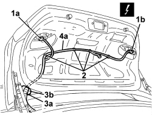
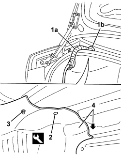
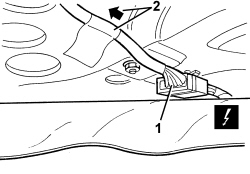

5505B50 BOOT WIRING - R R
- Path
- Procedures > 55 ELECTRICAL EQUIPMENT > 5505 INSTRUMENT/GAUGE ELECTRICAL CIRCUITS > 5505B DOOR, BOOT AND BONNET WIRING > 5505B50 BOOT WIRING - R R
- Kind
- repair procedure (removal / refitting; the operation number is the code)
- Applies to
- all engines; all production periods
- Interactive page
- https://sloeber94.github.io/elrnDB/#/939010982
Applies to: all engines; all production periods
 Removing
Removing
 Refitting
RefittingOp. 7025B38 BOOT LID LOCK - R+R
1. Disconnect the electrical connections (1a, 1b).
Description | Component |
|---|---|
LEFT REAR LIGHT CLUSTER (MOVING SECTION ON BOOT LID) | See F035 LEFT REAR LIGHT CLUSTER (MOVING SECTION ON BOOT LID) |
RIGHT REAR LIGHT CLUSTER (MOVING SECTION ON BOOT LID) | See F036 RIGHT REAR LIGHT CLUSTER (MOVING SECTION ON BOOT LID) |
2. Release the wiring retainers.
3. Release the cable duct (3a) from the boot lid opening (3b).
4. Extract the wiring (4a) from the boot lid passing through the opening (3b).

Applies to: all engines; all production periods
1. Release the cable duct (1a) from the body opening (1b).
2. Undo the retaining studs using the special tool.
Tool | Description | Function | Validity |
|---|---|---|---|
1823015000 | Knife | Retainer removal |
3. Undo the nut.
4. Slightly lower the upper edge of the left boot trim.

Applies to: all engines; all production periods
1. Disconnect the electrical connection.
Description | Component |
|---|---|
REAR/BOOT COUPLING |
2. Withdraw the boot lid wiring from the body and recover.

Applies to: all engines; all production periods
Refitting
Removing- Check that the wiring is not damaged and that the individual conducts are correctly fastened to the connections.
If necessary, carry out continuity tests.
- Insert the wiring in the body.
- Connect the electrical connection.
- Position the upper edge of the left boot trim and secure with the retaining stud and nut.
- Fit the bulkhead coupling through the hole in the body.
- Reinsert the wiring into the boot lid.
- Fit the bulkhead coupling to hole in the boot lid.
- Connect the wiring retainers.
- Connect the electrical connections.
Op. 7025B38 BOOT LID LOCK - R+R
- Check that the lights in the dismantled parts are working.